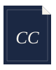

Editorial infrastructure
for post-production.
CutAtlas builds tools for the work between the cut and the deliverable — precise, reliable, and made to fit the pipelines professional editors already trust.
CutBridge is in closed beta — public waitlist open.
Software for the work between the cut and the deliverable.
Post-production runs on handoffs. An editor locks a cut; then the color, online, and sound departments each need the project rebuilt to their own specification. The work in between — preparing sequences, exports, and folder structures — is repetitive, exacting, and unforgiving of small mistakes.
CutAtlas is a small studio building tools for exactly that work. Each one runs inside Adobe Premiere Pro, takes over a task editors currently do by hand, and stays out of the way the rest of the time.
Three tools, one pipeline.
Three tools that follow a Premiere Pro editor's work end to end — CutCompose builds the first assembly, CutMap keeps the project legible, and CutBridge carries the finished cut downstream.

CutCompose by CutAtlasCutCompose
Automatic roughcut assembly for Premiere Pro
Reads your script, storyboard, and footage and lays out a first assembly inside your Premiere Pro project — so editing begins from a structured starting point, not a blank timeline.
Explore CutCompose → CutMap by CutAtlasCutMap
Visual versioning for Premiere Pro
Turns a Premiere project into a clear visual map. Organize bins and sequences into a structure you can read at a glance, keep it in sync, and track the status of every cut and version.
Explore CutMap → CutBridge by CutAtlasCutBridge
Finishing-ready handoff from Premiere Pro
Automates the handoff to grade, online, and sound — generating FCP XML, AAF, EDL, and burn-in references in a clean, predictable folder structure, so downstream teams receive exactly what they expect.
Explore CutBridge →Built by editors.
CutAtlas is a small studio in Poland, run by people who spent years in post and grew tired of the same manual chores. We build the tools we wanted on the timeline — and we would rather ship something dependable than something loud.
About CutAtlas →